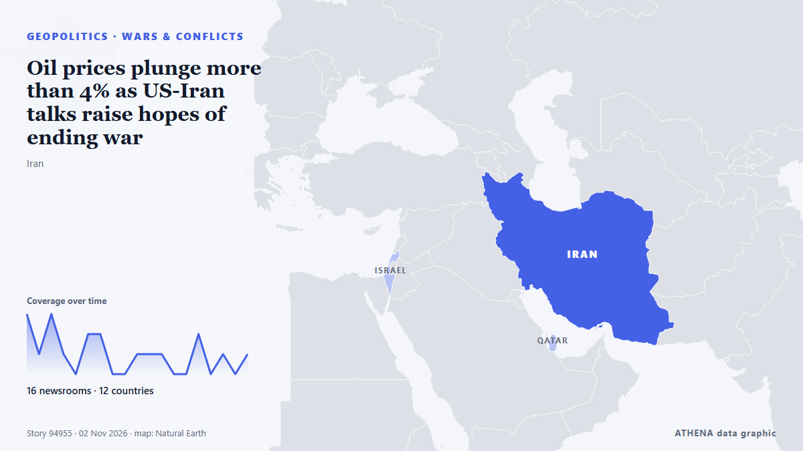

Oil prices plunge more than 4% as US-Iran talks raise hopes of ending war

Both oil benchmarks are down in early trading. de The Business Times
Relayé de façon indépendante par 16 médias dans 12 pays depuis le 1 nov. ; premier à l'annoncer : The Business Times ; la couverture faiblit. ATHENA juge le risque élevé (6.7/10), surtout en raison de la gravité des dommages décrits et de sa portée géographique et sectorielle. La confiance est de 86 % (élevée) : 16 médias indépendants le confirment, avec une fiabilité moyenne des sources de 76 %. Médias par pays : Pakistan (3), Singapour (2), Sri Lanka (2). Couverture : du 1 nov. au 2 nov., 19 heures.
Pourquoi c'est important: Ce suivi couvre les événements derrière les prix de l'énergie — décisions de l'OPEP+, ruptures d'approvisionnement, conflits sur les routes maritimes et demande —, pas les prix eux-mêmes.
Ce qui a changé : 19 nouveaux articles de 16 rédactions dans les 24 heures jusqu'au 2 nov..
Premier titre : Oil slips more than 1% as talks continue on ending Iran war
Les titres sont affichés en anglais, tels que publiés.
En un coup d'œil
Sélectionné, noté et rédigé par la méthodologie publiée d'ATHENA. Aucun rédacteur n'intervient sur un événement en particulier. Comment il est produit ›
| 01 Nov 23:51 UTC | 3 |
|---|---|
| 02 Nov 00:51 UTC | 1 |
| 02 Nov 01:51 UTC | 3 |
| 02 Nov 02:51 UTC | 1 |
| 02 Nov 03:51 UTC | 0 |
| 02 Nov 04:51 UTC | 2 |
| 02 Nov 05:51 UTC | 2 |
| 02 Nov 06:51 UTC | 0 |
| 02 Nov 07:51 UTC | 0 |
| 02 Nov 08:51 UTC | 1 |
| 02 Nov 09:51 UTC | 1 |
| 02 Nov 10:51 UTC | 1 |
| 02 Nov 11:51 UTC | 0 |
| 02 Nov 12:51 UTC | 0 |
| 02 Nov 13:51 UTC | 2 |
| 02 Nov 14:51 UTC | 0 |
| 02 Nov 15:51 UTC | 1 |
| 02 Nov 16:51 UTC | 0 |
| 02 Nov 17:51 UTC | 1 |
| 02 Nov 00:18 UTC | 5.0 |
|---|---|
| 02 Nov 00:27 UTC | 6.3 |
| 02 Nov 06:56 UTC | 7.3 |
| 02 Nov 10:40 UTC | 6.7 |
| 02 Nov 11:18 UTC | 7.2 |
| 02 Nov 14:32 UTC | 6.8 |
| 02 Nov 18:38 UTC | 6.7 |
Pourquoi ces chiffres
Importance
Risque
Confiance
La couverture : qui l'a annoncé, et quand
titre tel que publié · ouvre l'original- The Business Times · SingapourOil slips more than 1% as talks continue on ending Iran war
- New Straits Times · MalaisieOil slips more than 1pct as talks continue on ending Iran war
- APA (English) · AzerbaïdjanOil prices fall more than 1% as talks to end war on Iran continue
- Ada Derana · Sri LankaOil slips more than 1% as talks continue on ending Iran war
- Times of India · IndeOil prices today: Crude falls over 1% as Iran-Qatar talks raise hopes of diplomacy
- MyJoyOnline · GhanaOil slips more than 1% as talks continue on ending Iran war
- Business Recorder · PakistanOil prices ease 3% on optimism for Qatari-led talks on ending Iran war
- Business Recorder · PakistanIndian shares set for positive start on talks to end Iran war, strong Reliance earnings
- Shafaq News (English) · IrakOil slides below $110 threshold on diplomacy
- Asharq Al-Awsat (English) · Arabie saouditeOil Prices Ease 3% on Optimism for Qatari-Led Talks on Ending Iran War
- Arab News · Arabie saouditeOil prices ease 3% on optimism for Qatari-led talks on ending Iran war
- Business Recorder · PakistanIndia bonds poised to gain as oil slips; US midterms in focus
- CNA (Channel NewsAsia) · SingapourOil drops over 4% on hopes of progress in talks on ending US-Iran war
- Offshore Engineer · États-UnisOil Prices Tumble Nearly 4% as US-Iran Peace Hopes Grow
- Ada Derana · Sri LankaOil drops almost 4% on hopes of progress in talks on ending US-Iran war
- Türkiye Today · TurquieOil prices plunge more than 4% as US-Iran talks raise hopes of ending war
- NDTV · IndeOil Prices Fall 6% Over Renewed Hopes Of US-Iran Peace Talks
- News of Bahrain · BahreïnOil Prices Plunge 6% as US-Iran Talks Raise Hopes of Ending War
- MarineLink · États-UnisOil Prices Drop 7% as Iran, Qatar Open to Peace Talks